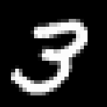
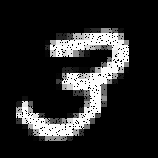
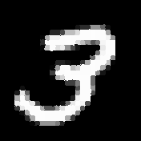

AutoEncoder: Theory, Applications & Simulation
What is an AutoEncoder?
An AutoEncoder is a type of neural network that learns to compress and reconstruct data. It consists of two parts:
- Encoder: reduces the input to a latent representation.
- Decoder: reconstructs the input from the latent space.
Use Cases
- Image compression and reconstruction
- Denoising corrupted data
- Anomaly detection in cybersecurity and finance
- Dimensionality reduction for simulations (e.g., fluid dynamics)
- Data generation (foundation for GANs and VAEs)
Training & Validation
AutoEncoders are trained using unsupervised learning. The goal is to minimize the reconstruction error, typically using Mean Squared Error (MSE).
- Training: on unlabeled datasets like MNIST or CIFAR-10
- Validation: monitor loss on a separate validation set
- Testing: evaluate generalization and reconstruction quality
Modern Variants
- Denoising AutoEncoder: reconstructs clean data from noisy input
- Variational AutoEncoder (VAE): learns probabilistic latent spaces
- Sparse AutoEncoder: enforces sparsity in the latent representation
- Convolutional AutoEncoder: optimized for image data
🧪 Simulated Denoising AutoEncoder
This demo simulates how an AutoEncoder removes salt-and-pepper noise from a 176×176 MNIST digit.

Original

Noisy

Denoised
Left: Original image
Center: Noisy input (salt & pepper)
Right: Simulated AutoEncoder output